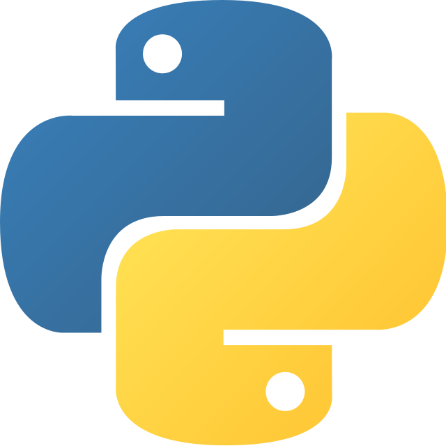
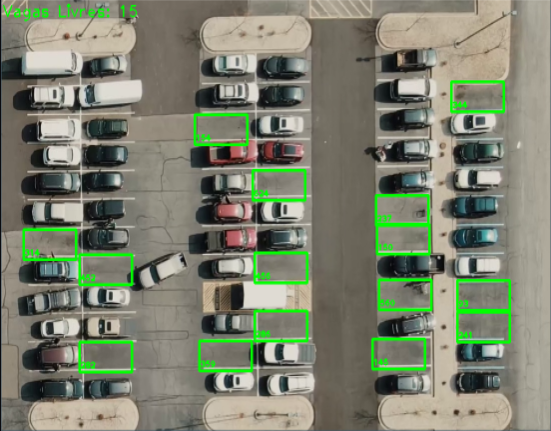
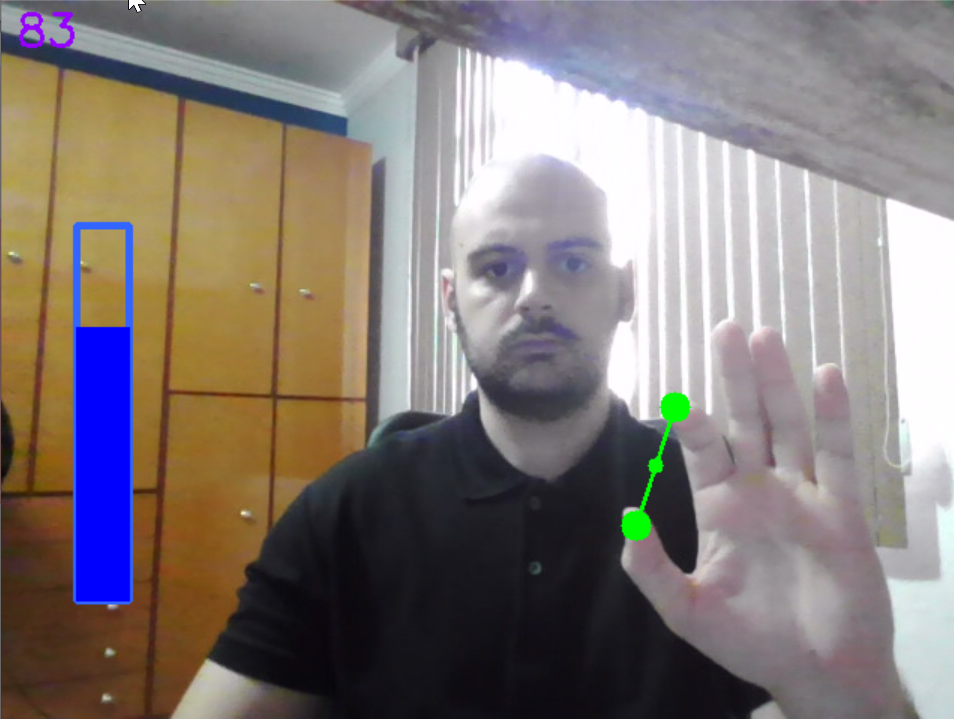
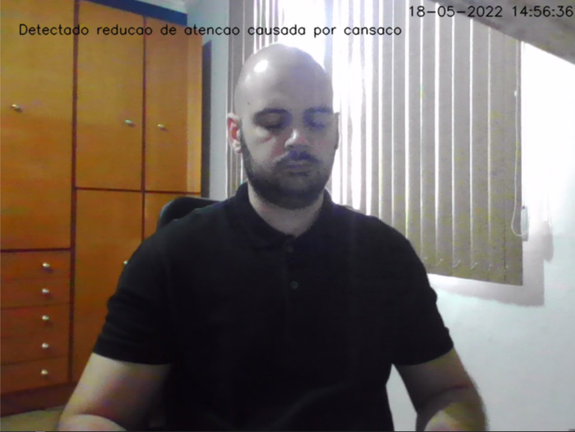
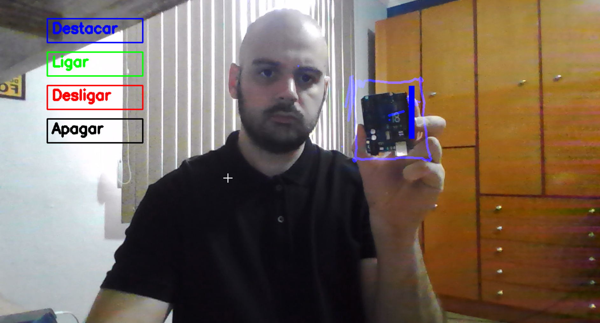
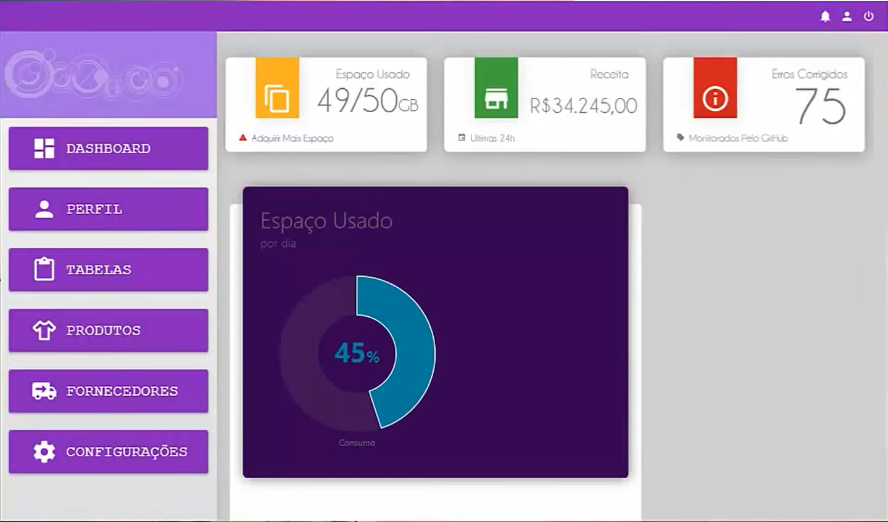

Leonardo Antunes dos Santos
- Digitalização de processos Industriais
- Criação de plataformas web
- Machine Learn e Deep Learn
- Criação de algoritmos de Visão Computacional
- Arquitetura e operações em bancos de dados (SQL, MySQL, Postgree)



Classificação de Vagas de Estacionamento com Visão Computacional
Este algoritmo indica o status de ocupação de vagas de estacionamento utilizando técnicas de visão computacional. O projeto poderá contar com versões simples contendo apenas técnicas de processamento de imagens, como também com técncias de Inteligência Artificial como SVM e Random Forest.

Controle de Dispositivos com Visão Computacional
Este projeto realiza o monitoramento da distância entre dedos utilizando Visão Computacional. Pode ser utilizado para controlar dispositivos físicos como luzes, fechaduras e aumento de volume de dispositvos eletrônicos.

Este projeto indica se uma pessoa está com níveis reduzidos de atenção ao executar uma atividade, identificando se ela apresenta sinais de cansaço e sonolência. Pode ser usado para sistemas de monitoramento de condição de alerta.

Interface de Controle com Visão Computacional
Este projeto cria uma interface de controle e permite a interação do usuário com essa interface. Este projeto pode ser utilizando em conjunto com óculos de realidade virtual para permitir interação dinâmica com objetos em um ambiente físico.

Análise de Investimentos
Utilizando técnicas de Data Science, este projeto propõe estimar boas escolhas de investimentos financeiros utilizando três técnicas (Equal Weight, Quantitative Momentum e Quantitative Value).
Dashboards e Plataformas Web
Criação de Dashboards e sistemas de consultas em banco de dados utilizando diferentes tecnologias, como frameworks Django e .NET, front-end com HTML/CSS e WPF e bancos de dados como SQL, MySQL e PostGree.
